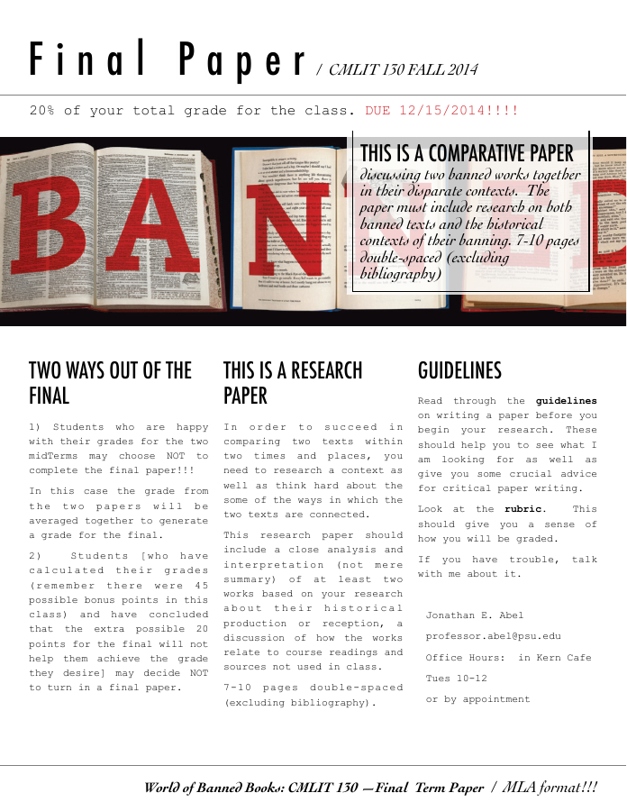
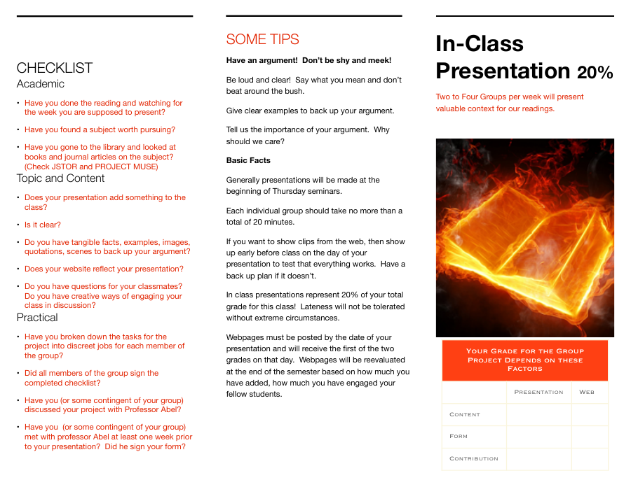
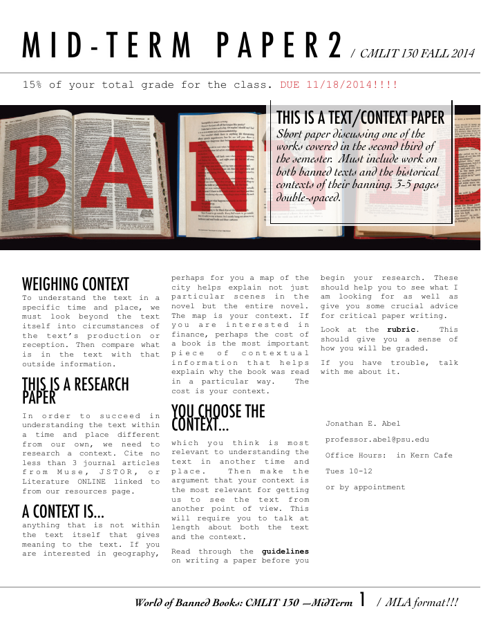
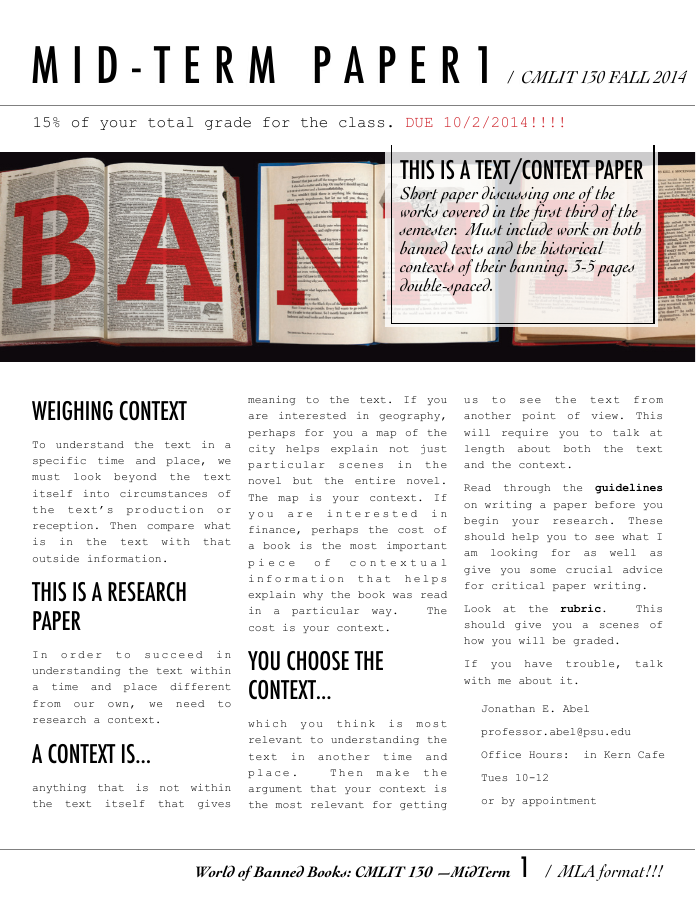

Documents
Download Course Documents Here
Course Documents
2014
Important course documents will be available here. [Note course readings when available in digital form are linked to from the schedule page.]

Final Paper Guidelines

Syllabus for those that like a handy pdf form. But remember the syllabus is in flux. Any downloaded version will not change with the inevitable course changes. Always check the website schedule page for the latest developments.
Download the above pdf flyer to find out how to register to read. Get on the list and tell them you’re in CMLIT 130, so you get bonus credit when you read!!!


For the explanation of In-class Presentations click the above image to download the pdf. Also sign up here by Week Three September 11.


Prof Abel’s Paper Writing Guidelines
Mid Term 2 Assignment Description


Mid Term 1 Assignment Description
Paper Rubric